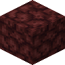

浸熔石
Soakstone
合成获得 (1)
rubinated_nether:freezingRubinated Nether
原始 JSON
{
"type": "rubinated_nether:freezing",
"category": "freezable_misc",
"cookingtime": 400,
"experience": 1.0,
"ingredient": {
"item": "minecraft:magma_block"
},
"result": {
"id": "rubinated_nether:soakstone"
}
}